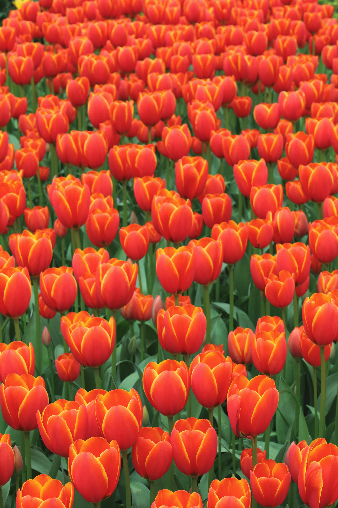

Oor Ons
Kyk na hierdie kort video om ons pragtige landerye te sien:

Klasie Blomme Boerdery spesialiseer in die produksie van hoë kwaliteit blomme, insluitend Dahlia's, Tulpe en Rose. Ons boerdery is geleë in die ooste van Pretoria. Ons het bestaan as 'n eenmansaak en het in 2024 uitgebrei tot 'n klein onderneming met 20 werkenemrs. Ons is trots op die groei wat ons ervaar het en daar is groot planne om nog groter uit te brei in die toekoms. Met ons oë op die Vader werk ons passievol elke dag om ons doelwit te bereik om die beste blomme in Suid-Afrika te verskaf.